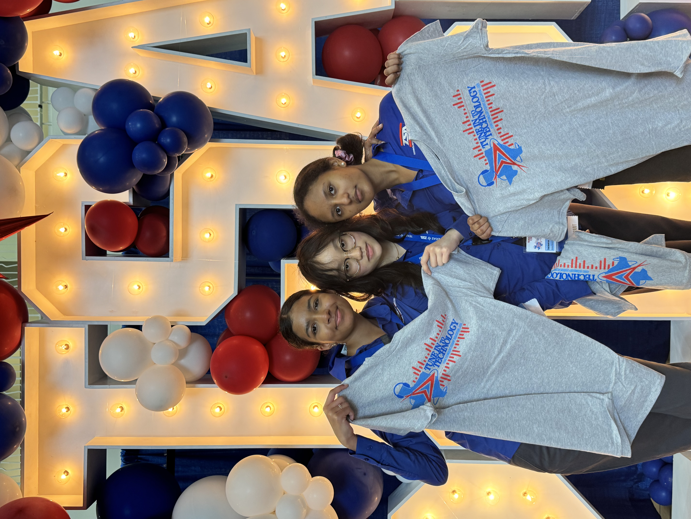

What is TSA?
- National STEM program with individual and team events across engineering, CS, media, and design.
- Most events are artifact-driven (code, CAD, prototypes, videos) with clear rubrics and specs.
- Compete at the regional and state level, with potential to go national.


Popular starter events
Coding
Team of 2 builds a program to solve a defined task. Languages allowed vary by prompt.
Robotics
Team designs and programs a robot to complete missions on a challenge field.
Video Game Design
Team of 2–6 builds a playable game with documentation and pitch.
Digital Photography
Individual photo portfolio around a theme with technical and artistic criteria.
Data Science & Analytics
Small team analyzes a dataset, builds visuals, and presents findings.
Technical Design
Team of 2 produces a design brief, sketches, CAD, and a portfolio.
See more middle-school events
- Audio Podcasting
- Biotechnology
- Career Prep
- Challenging Technology Issues
- Chapter Team
- Children’s Stories
- Coding
- Community Service Video
- CAD Foundations
- Construction Challenge
- Cybersecurity
- Data Science & Analytics
- Digital Photography
- Dragster
- Drone Challenge (UAV)
- Electrical Applications
- Flight
- Forensic Technology
- Inventions & Innovations
- Leadership Strategies
- Mass Production
- Mechanical Engineering
- Medical Technology
- Microcontroller Design
- Off the Grid
- Prepared Speech
- Problem Solving
- Promotional Marketing
- Robotics
- Solar Racer
- STEM Animation
- Structural Engineering
- System Control Technology
- Tech Bowl
- Technical Design
- Video Game Design
- Website Design
Getting ready to compete
Choose one primary event. Teams form around shared interest and time commitment.
Specs matter. Create a checklist from the rulebook. Prototype early; iterate weekly.
Code, CAD, reports, videos, and displays. Keep files named and versioned.
Rehearse the interview or presentation. Aim for clear evidence and clean demos.
FAQ & Fit (TSA vs DI)
TSA leans technical with clear rubrics and artifacts; DI leans performance with skits and story builds.
- TSA: spec-based builds, interviews, presentations
- DI: live show with engineering/art inside the skit
Students who like coding, CAD, making, media production, and focused competition categories.
- Prefer building over acting
- Enjoy precise rules and checkpoints
- Want individual or small-team options